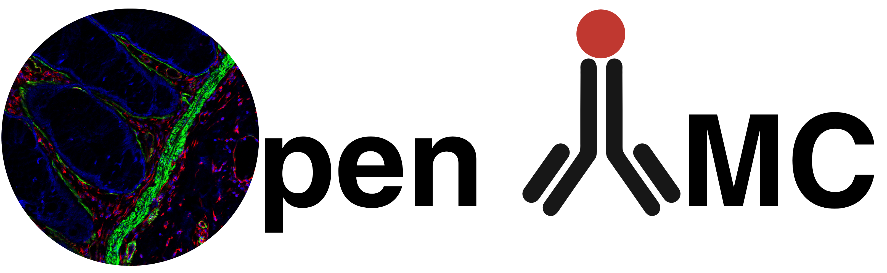

Overview¶
{kind=link}

OpenIMC is an open-source, cross-platform software framework for the analysis of Imaging Mass Cytometry (IMC) data. It unifies data visualization, preprocessing, segmentation, feature extraction, clustering, and spatial analytics within a single reproducible environment. OpenIMC provides both a command-line interface (CLI) for automated workflows and a graphical user interface (GUI) for interactive exploration.
IMC generates high-dimensional, multiplexed proteomic images using metal-tagged antibodies and laser ablation mass spectrometry. While the modality offers unprecedented cellular and spatial resolution, it also poses unique analytical challenges: Poisson-distributed ion counts, channel-specific noise, variable spillover, inconsistent panel definitions, and heterogeneous image formats (MCD, TXT, and OME-TIFF). OpenIMC addresses these challenges through a set of well-defined, modular pipelines designed to support both plated-cell IMC assays and tissue-based spatial proteomics.
OpenIMC is designed for IMC practitioners, non-coders, computational biologists, pathologists, and developers building custom analysis pipelines for multiplexed imaging. It provides a complete workflow for users seeking either:
an immediately usable end-to-end IMC analysis solution, or
a flexible Python API for integrating IMC analysis into larger pipelines, such as clustering, spatial modeling, or machine-learning-based interpretations.
Additional Resources¶
More detailed instructions for installation, CLI usage, GUI workflows, and pipeline examples can be found in the corresponding sections of this documentation. The associated manuscript provides biological validation, performance benchmarking, and comparisons to existing IMC software frameworks.